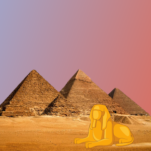
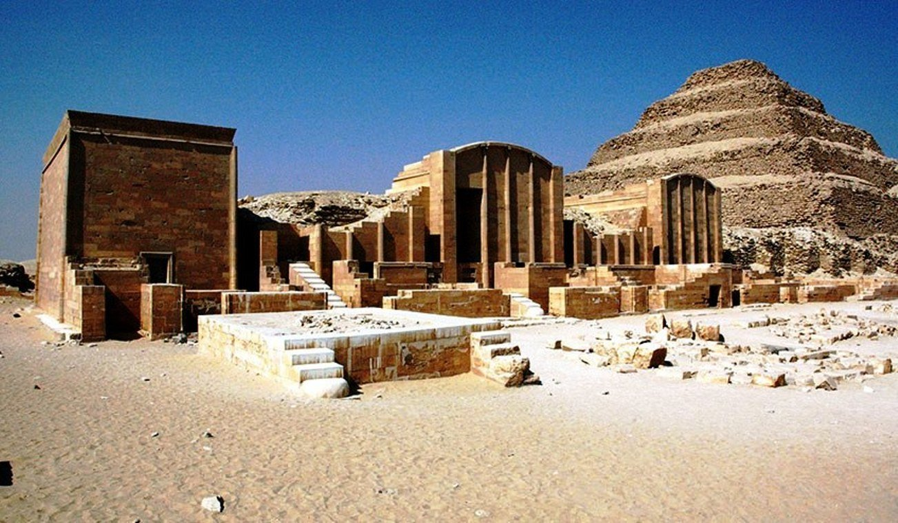
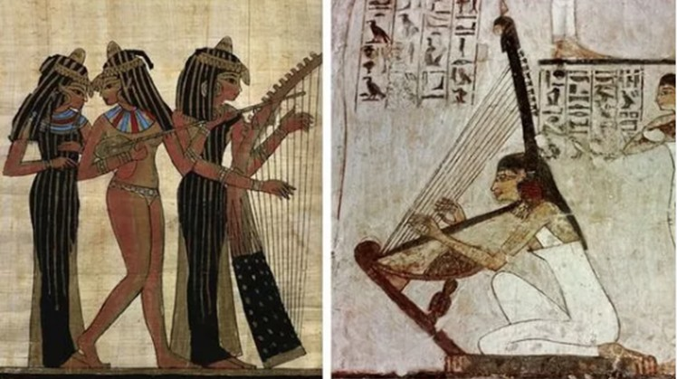

Giza
Intro
Giza is the second-largest city in Egypt after Cairo and fourth-largest city in Africa after Lagos, Kinshasa and Cairo. It is the capital of Giza Governate. Giza is located on the west bank of the Nile, 4.9 km southwest of central Cairo, and is a core city of the Greater Cairo metropolis. Giza is most famous as the location of the Giza Plateau, the site of the some of the most imporessive and ancient monuments in the world. Giza is a plateau southwest of modern Cairo which served as the necropolis for the royalty of the Old Kingdom of Egypt. Most famous for the pyramids of Khufu(completed in c. 2560 BCE) and the Great Sphinx (built 2500 BCE).
History
As ancient Egypt passed under several conquests under the Persians, Greeks, Romans and Byzantines, so did the area in what is now Giza. A Byzantine village named Phylake (Greek: Φυλακή) or Terso (Coptic: ϯⲣⲥⲱ, meaning "the fortress", now Tersa) was located south of Giza and should not be confused with it. Egyptians called the area Tipersis (Coptic: ϯⲡⲉⲣⲥⲓⲥ) (also Tipersis enbabylon (which most likely refers to Babylon Fortress but may as well refer to Babylon in Mesopotamia) Tipersoi, Perso), which may correspond to Persians (as the name may be literally translated as "Persians of/from Babylon").
Cuisines
Egyptian cuisine makes heavy use of legumes, vegetables and fruit from Egypt's rich Nile Valley and Delta. It shares similarities with the food of the Eastern Mediterranean region, such as rice-stuffed vegetables and grape leaves, hummus, falafel, shawarma, kebab and kofta. Examples of Egyptian dishes include ful medames, mashed fava beans; kushari, lentils and pasta; and molokhiya, bush okra stew. Pita bread, known locally as eish baladi is a staple of Egyptian cuisine, and cheesemaking in Egypt dates back to the First Dynasty of Egypt, with domty being the most popular type of cheese consumed today.

Music
Music has been an integral part of Egyptian culture since antiquity in Egypt. Egyptian music had a significant impact on the development of ancient Greek music, and via the Greeks it was important to early European music well into the Middle Ages. Due to the thousands of years long dominance of Egypt over its neighbors, Egyptian culture, including music and musical instruments, was very influential in the surrounding regions; for instance, the instruments claimed in the Bible to have been played by the ancient Hebrews are all Egyptian instruments as established by Egyptian archaeology.
